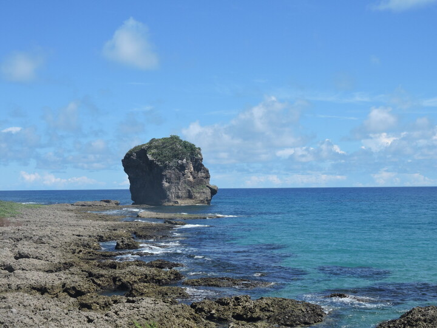
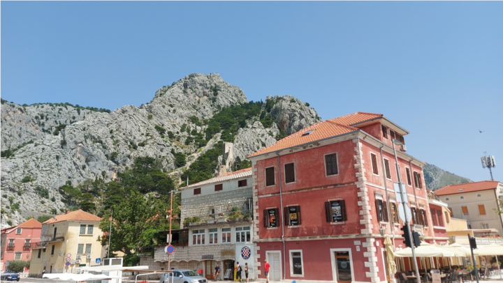
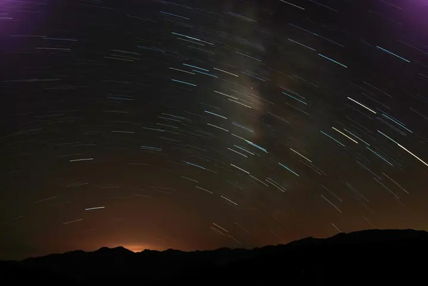
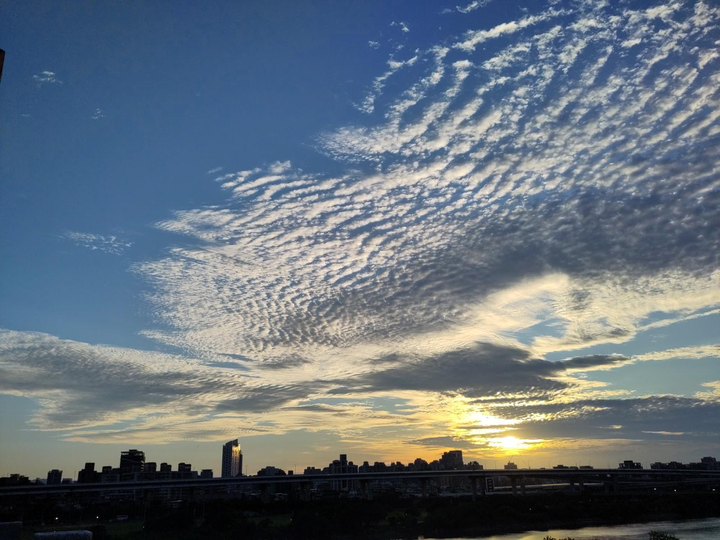
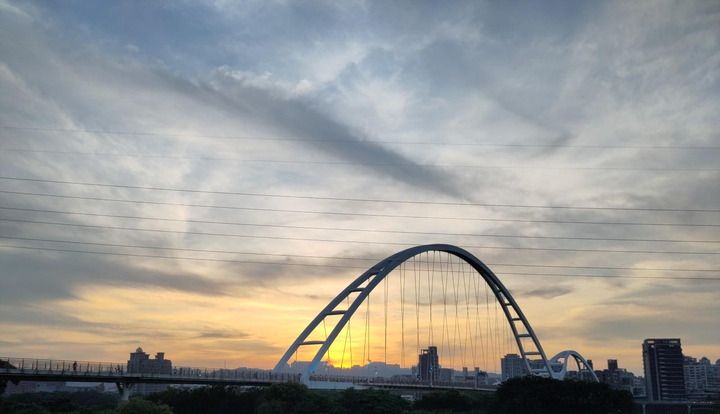
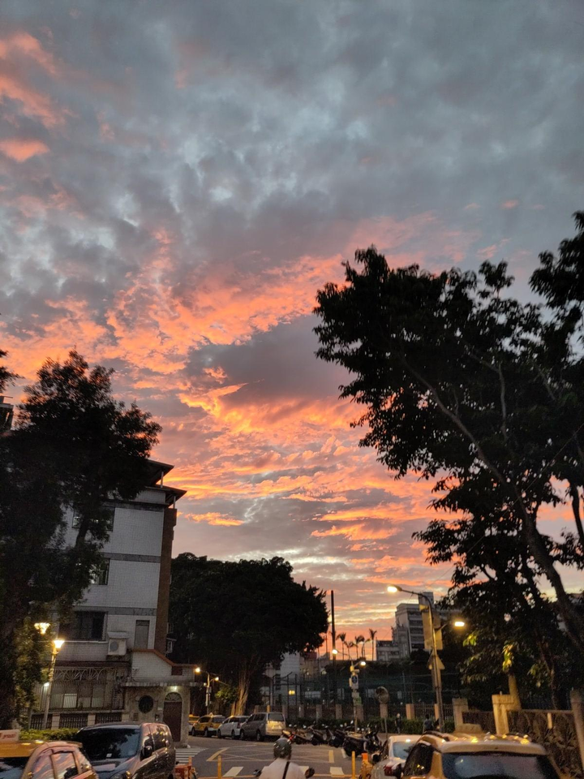
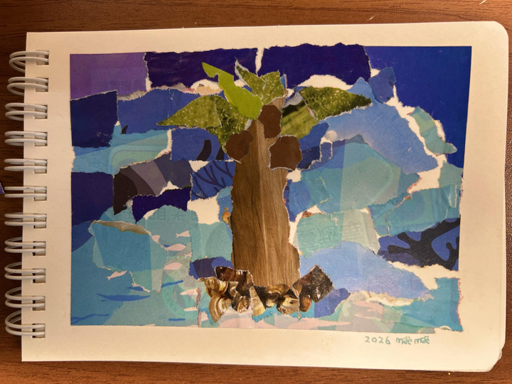
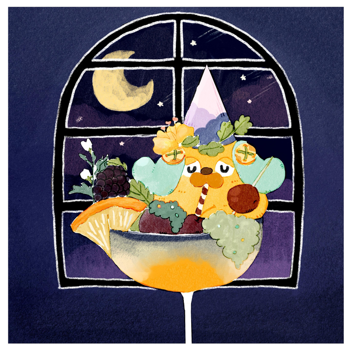

要珍藏本刊，請按此瀏覽／下載PDF版本（檔案大小約 55 MB ）。
感謝第零誌出版後的各方回饋，第一誌似乎更成熟。
不論今天是下雨天還是炙熱的典型暑日，希望你享受這份來自聯邦宇宙嘟友協作的「夏日誌」！喜歡的話，記得轉嘟讓更多聯邦宇宙的嘟友能看到喔。
編輯團隊
責編：dale、Lîm Tsú-thuàn、裕、Mi、yoxem、Alucan
資訊組：日落
總召：CY
最近在深夜漫無目的地滑手機，偶然被演算法推送一條介紹斯洛文尼亞名勝的短片。片中大半景色仍一如自己幾年前獨遊的風光，尤其蔚藍的 Lake Bled 更繫繞心頭。
乘小誌徵求夏日記憶的機會，加上自己亦不願將經歷積壓在腦海中不見天日，不如就集結不同色階的藍，來個拼盤流水帳。
斯洛文尼亞 ／ 斯洛維尼亞 Bled
我編排這趟歐洲之旅時，其實有個陋習：本應先熟習住宿地的街道面貌，但已迫不及待往鄰近的景點跑。斯洛文尼亞的旅程就是這種玩法下的產物：還記得抵達首府盧比安納時經已夜深，我從火車站走到寂靜的市中心，沿途踩着方正的碎磚路。彎彎曲曲的路線，加上眼前只粗略認出粉紅色的教堂建 築，我一霎那竟有穿越到澳門的錯覺。
還未看遍區內的風景，我又依酒店的時間表，坐上九點半開出的巴士，一個多小時後抵達西北方的 Bled。Bled 的巴士站位處上坡，加上周圍的廢氣，使我初抵埗時只覺景觀一般。直到沿路走進公園，先是看見白鵝在草坪上不徐不疾地覓食，再放眼看向公園中心的 Lake Bled，我的眼界才豁然開朗。
Lake Bled 被群山包圍，在藍天下的倒影固然優美，但水色在湖心又似圈起全個湖泊的焦點：知名的「湖中教堂」。
據市政府的網站記載，教堂在 8 世紀起設立，自 17 世紀中便維持現時的樣貌，新人走堂前的 99 級樓梯結婚的傳説也從此開始。但之前島上亦有一個專門保佑新生和生育的異教神祠，令人好奇到底當初她何以矗立在島上，又如何被建造？我既非新人，亦欠缺坐遊覽船的銀根，所以只能遠觀教堂在水 中央的孤寂姿態。
有別於同樣被山脈圍繞、形狀修長的 Hallstatt，這裏我可以順着湖邊走，試圖捕捉湖泊在不同角度的姿態。從教堂的側面轉到背後，湖面上的點綴從色彩繽紛的遊覽船變成乘機玩水的旅客；週遭的地景也從公園轉換成餐廳、柏油路和度假村，令人更留意其範圍之廣。
不過，我既無心下水，亦無力乘船享受，豔陽下在湖邊踱步終歸是沉悶侷促的活動。直至我向公園回頭走之際，看見其中一座山嶺郊遊徑的入口，便突發奇想：不下水，那來上山吧！
我走的郊遊路線名為 Mala Osojnica，是同名山丘的一部份，也是這座山三條路線中第二長的。我年少無知，加上在香港也沒有正式爬過山，所以一開始的路還算可以適應，但在路線的後半周吃盡苦頭。一是路途越來越陡峭，正常的步道階級開始消失，甚至部分路段只在岩石上釘上鋼索攀扶。二 是砂石路相當容易滑倒，即使途中有鐵梯上落，亦因疏於保養、佈滿枯葉等各種原因，而並非想像般安全。（翻查維基百科，才發現 Osojnica 的斯洛文尼亞語字根，便是「少受日照的山坡」之意，所以前人早已領教過了。）
我走的時候（忘了是上山還是下山）便滑倒過，因為身穿牛仔褲所以沒有擦傷腳，但我當時手執巧克力餅乾當作零食，結果融化的巧克力醬沾上手和隨身背包，十分狼狽。（之後我學會不要在歐洲大熱天時帶巧克力零食出門，還有某 T 牌的靴子也不是任何地形都可征服的。）
但正因一路難行，在途中認識的人都似乎帶有種同儕情誼：例如我在途中的觀景台遇到一位泰國朋友，當時正從澳洲一路旅遊，甚至攀過三座山登上香港的天壇大佛；而在路線頂端拍照時也遇到來自三藩市的登山客，其時經已旅遊世界五個月。
在不同的高度回頭俯瞰湖中教堂，又是另一番滋味。對比在地面任人繞圈捕捉的坦蕩，湖畔在中途的觀景台稍為被樹木林蔭遮擋，反而有種在叢林間發現水源的興奮感覺，湖心的教堂在此也顯得有點羞澀。到了路線盡頭，視野所達不止湖面，也擴闊至圍繞湖畔的山脈、城鎮，甚至更遠處的一種高峰。
不止教堂，湖本身也變得渺小，更遑論水面上的人——此處的水色光滑得儼如滿至杯邊的清水，正以張力輕輕撐起水中的信仰與允諾。
美不勝收的景緻，即使來時有多辛苦，一切都值得了；即使路徑還可到達最高峰，抑或山的對面還有值得參觀的城堡，我還是抱住滿足的心情下山，套用小學生作文的收尾，「依依不捨」地回到盧比安納。
克羅地亞 / 克羅埃西亞 Omiŝ
雖説一路上行程緊湊，但意外也是難免：因為當時只有在香港的交通經驗參考，所以自己的「規劃」，大多只是乘火車，嘗試走前人走過的路而已。但在克羅地亞，千瘡百孔的計劃開始現形。例如 Split 的行程本身只是簡單的「跳島」，旨在仿傚朋友拍下的倩影；後來才發覺乘船的費用比想像中貴， 只好臨時往可以即日來回的小城跑，也因此用一個下午，認識另一個沿岸城市—— Omiŝ。
小鎮大致被柏油路分成兩邊，但若要尋找城內地標——Mirabela 碉堡，卻非易事：若非入口的鐘樓突出在小巷周圍的米黃磚牆間，恐怕也未必留意到。我順着曲折的小路走，和售票處的黑貓打個照面後，便走上碉堡。碉堡的石級凹凸不平，尤其門前更是狹窄陡峭，我也不敢鬆懈一直前進，直至 碉堡矗立眼前。

建於 13 世紀的她曾是小鎮的瞭望台，旨在警告當時以海盜維生的居民有外敵入侵；亦因碉堡依山峽建造，有傳鄂圖曼帝國攻打克羅地亞時，駐守 Omiŝ 的士兵在碉堡頂向山峽大喊，回音大得有大軍防守的錯覺，迫使土耳其人撤退。傳説中的謀略甚有「空城計」的味道，但我參觀時碉堡確是「空城」，我除了繼續上樓，就是將樓層視作私人攝影棚般拍照。
本以為碉堡幾層便已走完，但三樓一側還有通往屋頂的天井，掛着一道簡陋的鐵梯。啡紅的鐵梯有不少歲月痕跡，加上自己身穿的鞋底又抓不穩梯級的鐵枝，不禁令我心驚。不過爬上屋頂後，眼界從咫尺的石牆拉闊成紅色的屋瓦和清朗的天色，心神又安定下來。
其實走上碉堡時從山坡回頭一看，便已俯瞰到色彩如此柔和的景觀，甚至有種意大利村落的印象；但在碉堡上更能鳥瞰到 Omiŝ 舊城的地形。左岸面向寬廣的亞得里亞海，色澤從海岸的蔚藍漸漸變深；右邊則見到采蒂納河與大海匯流，且或許在山脈和樹影的映照下，河水更顯翠綠；後方更有連接兩端山峽的高架橋（後來才發現是該年剛建成的建築成就）。
舊城的地形從密集的民居收窄到如勾般的海岸線，而海灘上的歡聲笑語亦隱約傳入耳中，使我特地沿着地圖的路線，從碉堡走到海灘一探究竟。走近之下，海灘的海面比想像中綠，加上山脈作佈景配襯，沙灘上朵朵五顏六色的大傘就更似「萬綠叢中一點紅」。不過自己沒有泳裝在身，又怕沾濕衣物，在沙灘上更顯格格不入。當時在海灘遊玩的人，大概會看到一個身穿 T 恤、牛仔褲的亞洲面孔，時而尷尬地踱步，時而蹲在石堤前窺探寄居蟹的窩。
臨離開海灘前，我才留意到岸上立在圓形雲石平台上的一個暗綠色雕塑，原來旨在紀念在克羅地亞獨立戰爭中陣亡的當地士兵。在如此歡樂放鬆的地方，與承載一地沉重歷史的裝置共存，大概是種值得銘記的突兀。
現在回看當時的日程，着實難以説服自己曾有如此體力走完全程。七點半起床、乘九點半的巴士火車，然後遊覽某（幾）個博物館、登上舊城區的鐘樓，或是湖畔和教堂……當時香港尚未流行中國旅客的「行軍式」旅行，但這就是日復日的長征無誤。
但一路上的藍光確實令我驚豔：不論是在 Bled 的山上意外獲得新視野，還是在 Omiŝ 偷得浮生半日閒，或是本次來不及寫、百聞不如一見的奧地利 Hallstatt 和始終觸不到的匈牙利 Balaton。有些景緻的出現是意料之外，有些卻是差點失去的風景，而各自亦有留下遺憾，但尤其與陰沉不定的香港相比，澄澈的水面反映的藍天仍美好得令人神往。
説到底，所有的自然美景和人為的遺憾，都由自己一人享受或承受。在陌生的地方呼吸自由的空氣，這種抽離也許才是我掛念這趟旅程的原因。
連日快晴，七月的陽光下柏油路面上熱氣閃爍，藍白拖彷彿不想與地面分開，每一步都得抬起腳才能讓它倆分離。院子邊的竹林也拿這熾熱沒有辦法，熱風吹過沙沙作響的竹葉聲響中偶爾帶著竹節啪唧啪唧的爆裂聲。
暑假的第一個週末，菜市場的黃老闆一早送來兩竹簍的蔭瓜，還是國小生的我環抱起來都有點吃力的竹簍，老闆扁擔挑著一副輕鬆的表情。阿嬤跟老媽兩人一邊跟老闆閒聊一邊揀選著竹簍裡的瓜確認有沒有太老的、壞掉的。老媽叫我去廚房拿水壺出來給老闆喝水，平常家裡喝水都是用大同的磁碗，理所當然的拿碗給老闆用時一旁的老媽一巴掌拍向肩膀。「齁～給客人要用杯子」看著就要開始唸起來的老媽，老闆笑笑說沒問題，用碗喝比較過癮。
坐在前庭台階的老闆掏出長壽煙，從盒底輕敲一下跳出一支煙輕巧的叼了起來，點起煙來深呼吸，嘟起嘴唇吐出了一個煙圈，慢慢飄著擴大的煙圈中他又吐了一口，新的煙圈穿過前面的煙圈。
「厲害吧」
老闆笑著跟我說。我老媽巴掌響亮的拍在老闆的肩頭「教什麼啦，莫教歹囡仔大細。」老闆向生氣的老媽連連道歉中，阿嬤已經把竹簍裡的瓜都確認一遍，從懷裡拿出黑色錦絨金色口金的錢包跟老闆結清帳款。滿臉笑容的老闆跟阿嬤他們道謝完後對著我說「抽煙不好，小孩子別學抽煙」丟下這麼一句就大步往街上走去。
老媽到廚房去拿來菜刀跟水果刀，阿嬤叫我去跟隔壁八叔公借長板凳，搬著長板凳到三合院的埕裡一支、兩支，第三、四支疊上就成了兩組即席的架子。老媽拿來矮凳跟阿嬤兩人坐在屋簷的蔭下地上鋪著報紙，我到房間去把忙著寫暑假作業的姊妹們一起叫來幫忙。
大門前，阿嬤跟老媽把蔭瓜去蒂剖半，老姐、我、我妹三個人拿著鐵湯匙把剖開瓜中間的瓜囊跟籽除去，夏天的悶熱空氣中剛剖開的蔭瓜的草青味不知怎麼的讓我忘掉那夏天的悶熱。
阿嬤跟老媽切瓜、我們接過挖籽，這樣反覆忘了時間時，外頭傳來引擎停止的聲音，阿叔阿嬸跟堂姊堂弟一家來幫忙了，阿叔扛著一麻袋粗粗的海鹽回來。還沒做完回來的寒暄就被阿嬤唸太陽都快到天頂了，真慢。阿嬸在旁邊追擊你們家的男人就是要拖到最後，在阿嬤、阿嬸、連同我老媽的碎碎唸追擊下，阿叔藉口尿遁跑去跟我老爸躲到後院抽煙，堂姊堂弟們理所當然即戰力，在院子邊的水龍頭洗好了手就加入挖籽的行列。
阿嬤、老媽跟阿嬸三人到齊，剖好的瓜不斷的疊起，「刮籽比較花時間、不要那麼快啦」外號老大的大姐忍不住跟老媽他們抗議，我們這些小的也跟著附和，好熱、太陽好曬、要休息～
老媽看著起鬨的我們也沒辦法，阿嬤說了剩下這些做完給你們吃冰。阿嬤才說完就換來我們這群小鬼的歡呼，歡呼還沒完阿嬸就冷靜的說「這些做完才有，等等還要抹鹽」。理所當然的我們這群小的哀號、挖完籽先讓我們吃冰才好這樣有的沒的抗議。小鬼們無力的反擊被老媽一句再吵就沒冰吃給打垮，大家老實的繼續拿瓜、挖籽。
人多就是力量，不到半小時終於都把籽給挖完了。
老媽檢查好沒有忘記刮的，終於放我們這群小鬼去吃冰。
客廳裡的三洋冰箱在神明桌旁，裡頭擺著客人來時的啤酒和老媽預備做好的小菜。上層冰庫頂端常常結著一層冰霜，製冰盒、一鍋鳳梨冰，要吃的時候拿著大鐵湯匙慢慢的一層一層的刮它，表層的部份糖少很硬又滑溜刮起來很麻煩不過越往下越容易吃，從中間挖穿的時候非常有成就感。
不過那不是這時我們的目標，我們想要的是冷凍庫下面的百吉棒棒冰，約莫三十公分，一層厚厚塑膠上頭有個小小圓頭的百吉棒棒冰是這種天氣最棒的東西，折下上面圓頭那啪的一下非常有快感。老大的大姐代表一人分一支，大家拿起來就準備開吃，啪啪啪一個個打開，先把圓頭上那小球連皮放進嘴裡咬碎，檸檬口味的冰一下子就成了冰沙化進了嘴了，夏天至福，大滿足。
「哥哥，我打不開」我妹這樣跟我說，百吉棒棒冰有時候會遇到很難折斷的頭。
「這個你先吃，我來開」
我把開好的棒棒冰給我妹先吃，拿起她那枝冰，試著把那個頭擰下來，通常轉個幾圈就能掉下來的頭就是死撐著不下來，沒辦法只好使出必殺技，用咬的。我一口咬住那個冰棒頭，用力一拉，嗯？怎麼有揮空的感覺，愣了一下，我妹突然大叫「老媽，哥哥的牙齒掉了～～他在流血」
她叫完幾秒後我才突然感覺到嘴巴裡的血味。在門口幫蔭瓜抹鹽的老媽跟阿嬤跑過來，讓我打開嘴巴一看，犬齒掉了。
站在門口的阿嬸說「這年紀正在換牙，很好有的事情，先去廁所漱口。」有護士經驗的阿嬸在這時候仍然冷靜。
去廁所漱完口回到客廳，老媽從急救箱拿出棉花讓我咬著，一邊咬著棉花的我口齒不清的跟老媽說我冰棒還沒吃完，老媽聽了就生氣了
「你現在這樣還想吃冰！？等止血後再說，明天再吃。」
啊～～世界要毀滅了，大家都在吃冰，就我不能吃。無視悲傷的我，
大姐說「你不能吃我幫你吃」
這世界又毀滅了一次（泣）。
大家吃完冰又回到埕那裡，大家庭孩子的悲哀就是總是要集體行動，悶悶的我跟著大家一起幫蔭瓜抹鹽，抹好鹽的蔭瓜一個個放上長凳上讓太陽曬乾，太陽已經老高，灼熱的陽光、遲緩悶熱的風、讓人昏昏欲睡的蟬叫聲。長凳擺不下的就由老爸、阿叔他們大人拿去擺在院子外的圍牆上。老媽她們去了廚房開始準備午餐。我們小的則把客廳的桌子、椅子擺好，廚房老媽她們一道菜完成就吆喝我們小的去拿。冰箱上的大同電扇開到最大，悶熱的一天、掉牙齒沒吃到冰的日子午餐還是要吃。
牙齒掉了，不能吃雞、不能咬豬肉的我只能吃魯肉飯，飯後老爸他們去外面抽煙，小的們幫忙收拾餐桌，我姐他們又回去寫暑假作業，我在廚房幫忙洗碗，阿嬤她們在客廳聊天，洗碗到一半，阿嬤走進廚房，稱讚我好乖，從錢包裡拿出五十塊鈔票放進我口袋，不要告訴其他人喔。阿嬤真的很疼我，拿到意外零用錢的我很現實的心情馬上好了起來。是這樣的現實小孩（笑）。
洗完碗，走出院子，外面仍然是燠熱的夏天，但意外的也不壞的日子。
暑假作業？我是不到最後不寫主義的，最後一個禮拜再寫，才剛放暑假，要好好享受。
請搭配背景音樂閱讀：
陳昇《綠樹與知了》
https://www.youtube.com/watch?v=YHqTXVWIMJU
雖家裡最近的圖書館走路也要 20 分鐘，那這樣還不如去學校的圖書館。明明才五月多，天氣卻好像七月的酷暑那麽熱。因為汽柴油漲價了，所以如果能走路、搭車到的地方，我就乾脆不騎車，順便皮克敏種種花，雖然這樣走在外面會很熱。
前陣子迷上電子書，先是認識電子書的格式、商店，再到要用什麼方式閱讀，這都是學問。不過，其實我沒那麼推崇電子書，但我後來覺得傳遞知識不應該被形式所侷限，最主要是書本有個味道，翻閱起來香香的，我很喜歡。
而且有一次買書，硬生生在書裡看到連續的印刷錯誤，寄回去出版社，補償了好幾本書給我。
有時間我也會去咖啡廳，那裡冷氣很強、又有東西可以吃，可是點吃的又會花很多錢，所以我會通常只會點杯飲料。
我覺得自己好像比較喜歡長篇小說，沈浸在故事的世界裡頭，體驗故事主角所經歷的；散文的話，不是說完全讀不懂，但有時候就是沒辦法共情，不太理解作者為什麼這樣寫，那種共鳴感，我還沒辦法體會。
沒有人能使
時光倒流，
草原再綠，
花卉再放。
只有在剩餘部份，爭取力量
What though the radiance which was once so bright
Be now for ever taken from my sight,
Though nothing can bring back the hour
Of splendour in the grass, of glory in the flower;
We will grieve not, rather find
Strength in what remains behind;
— 威廉．華茲華斯 William Wordsworth
嘴上常常說自己不喜歡夏天，因為我是在夏天出生的，夏天提醒著我生命中的詛咒。人到中年，現在「貴」為社畜，從年頭到年終都坐在冷氣房辦公，若要我寫下美好的夏日回憶，我便從學生時代的暑假裏去找。
三、香港鳳凰山
「我需要孤獨，我需要恢復我的本來面目回到我自己，呼吸自由、清新而令人興奮的空氣。」
大二的暑假，我上了兩回鳳凰山山頂。一次是跟田徑隊的隊友們，在六月；另一次，在八月，是自己一個人。
當年的日記記錄：
乘到東涌，我才開始研究路線。其實當晚回不回家，我也不肯定。鳳凰徑第一段是梅窩出發，第二段是南山，第三段是伯公坳，第四段是昂坪。不乘車的話，一就是昂坪出發（走纜車救援徑就最直接了），一就是伯公坳。我決定在後者開始。去羅漢寺，經地塘仔郊遊徑，去到伯公坳。在地塘仔郊遊徑只見過一個人，一個洋人；沿途破壞了不少蜘蛛網，我沒心留神去撥開它們。有些蜘蛛絲掃過我的額頭，有些掃過我的腳，還試過有的掃過我的嘴巴——我走得還真夠橫蠻。
越走，天色越黑。開始的時候，我還以為可以去昂坪。到了伯公坳的時候，天色已黑。農曆七月十一，月亮掛在天空。我明白甚麼是「在月色下趕路」了。
害怕嗎？甚麼是「怕」？「怕」有時足以叫人轉身逃跑，有時叫人放棄，有時叫人心慌但卻仍可以前行。當沒有選擇的時候，就沒有甚麼可以怕的了。
那天穿著短褲，抵達山頂，雖然是夏天，仍覺得好冷。其實六月跟隊友上山那晚也是冷，可惜我不太懂汲取經驗。剛到了山頂時，只有我一個訪客，我躲了進避風亭裏。之後我還拿出大三畢業研究計劃（ Final Year Project ）可能會用上的筆記來讀，真夠勤奮的。
上到山頂，我還打了幾個電話，嘗試找人聊天。
電話對話沒有很長，因為訊號不良。
當年的日記記錄：
其實我怕鬼（都未見過，見過都唔知！）、怕黑、怕昆蟲…或者全都不怕，因為上面提過，沒有選擇的時候，怎樣也得面對。我主要都是看 Preskill [1] 。看了一、兩小時，開始累了，開始會走神了，我想差不多時候睡覺。
我先嘗試坐著睡，後來又嘗試在地上依著牆睡。轉了好幾個動作，每個動作不知多少分鐘，也不知自己有沒有曾經入睡。這兒太冷了，我一到山上就有這個感覺。我要抱著自己的背包取暖。只是覺得明天一下山，就要回家去吧，很難受。
後來有幾個男人帶著啤酒上山，也是準備看日出。我不再孤獨了？大家聊了一會天，還合照了。我把電郵地址給了他們，讓他們可以寄那幅合照給我，可惜後來我沒收到他們的電郵。不知道是因為我是個醜女生，所以他們迴避再連繫我，還是偶然丟失了通訊方式？
無論如何，後來接近日出時，更多更多的人上到山頂，也是準備看日出。
至於那天有沒有看到日出，好像不重要吧。重要的是，那晚的時空，讓某個少年人能短暫透氣。
二、越南河內
「孤寂者過於匆忙把手伸給邂逅相遇的人。」
中六的暑假，我去了越南河內十天，作為五個中學生之一，代表香港參與學術奧林匹亞競賽。
那個比賽我搞砸了。
比賽前，我和奧賽隊友被安排在大學訓練，得要提早結束在中學母校的中六時光——那時知道，很可能同時是提早結束在中學母校的時光 [2]——因為在競賽獲得獎牌便可獲大學直接取錄，不用再苦惱一次公開試。
在大學訓練的第一天的晚上，我回到家，打電話向暗戀了大半年的長跑隊隊友告白。那是我人生第一次向別人告白。她說是有懷疑過，想不到是真的。
接下來心情當然很混亂，心思也沒專注在訓練上。
讓我把時空跳到七月下旬的越南。
比賽大會為每個地區各安排了一位越南大學生作領隊。我們的領隊叫玲，是個可愛溫柔的姊姊，穿起越南傳統的旗袍很漂亮，她在大學修讀中文。那時剛法律上成年的我在網上日記平台 xanga.com 這樣記錄：
抵達那天，她跟我說：「你就是香港隊唯一的女人吧？」我哪裏有「女人味」，成熟得稱得上「女人」啊？
玲和我常常在旅遊車坐在一塊。已經忘了跟她聊過甚麼。我常常在旅遊車上用口琴吹奏悲傷的小曲，玲也不厭倦地聽。
玲就有「女人」的溫柔了。我至今還認為當年她和一個奧賽隊友互有好感；有天我們三人坐計程車，她問我的隊友，能否不要走。
比賽結果，所有香港代表都獲得了獎牌，我得的是銅牌，整體排在所有銅牌得主的第四名——得了金牌或銀牌，大學將會提供挺豐厚的獎學金，銅牌沒有……
那個比賽賽後的宴會，是我第一次喝紅酒，裝著豪氣裝著成熟喝了兩杯。回到住宿的酒店，我嘔吐了。
父母仍以我代表香港並獲獎為榮，好像跟了不少親戚說這件事。
至於我，在那個準備要上大學的暑假，不譜愛情手段（或「法則」）的我都在跟那個中學長跑隊隊友糾纏不休；其實我明知她有她愛慕的男生。
戀慕女生，進了大學後，我仍一次又一次冒著污名 [3]，繼續讓這種事發生。——其實說「冒著」好像不對，因為我沒有公開追求女生；或者我內化了主流社會的偏見。
玲後來在當地結婚了；她在臉書公布消息那天，那位奧賽隊友在臉書寫了一段隱晦心碎的文字。
一、香港長洲
「你是個奴隸麼，你將不能是朋友。你是暴君麼？你將沒有朋友。」
中五公開試後的暑假，同班同學一起在長洲租了度假屋——那個度假屋是屬於同學家長任職公司的，所以，家境平凡的中學生把錢湊起來，也承擔得起三日兩夜的住宿。
那時，公開試完了，離放榜還有一段日子。我一直很愛香港的離島。單純的我，兩年準備公開試的時光多半在讀書看書、準備比賽和偷看別人網上日記之間——那是我「少年不識愁滋味」的歲月。我毫不猶豫就參加了這次度假。
有一天早上，我和其中一位同學早起了，我倆決定外出踏單車。
中五離校前，我買了個人紀念冊，讓熟稔的同學寫下他們對我的感覺等等，但有朋友把它弄掉了，我沒有另買一本。那位一起踏單車的同學，因此補寫了一封信給我，敍述了她由中一起對我的印象，還給了我一些實用社交提示，例如多對鏡子練習微笑。
那個天清氣朗的早上，那位友善的同學，那個充滿未知和可能性的夏天，都對我很溫柔。
註1：一位科學家的姓氏，此處借代他在其專業範疇的教學筆記。
註2：香港2012年之前的教育制度，一般學生都是中學七年、大學三年，中五和中七各有一次公開試。
註3：2012年11月歌手何韻詩公開出櫃，為香港首位公開同性戀身分的當紅女藝人，香港社會引起了一陣子熱烈議論。當年的《香港蘋果日報》社論曾以〈讓「禁色」盡快成為歷史吧！〉為標題。關於香港在LGBT議題上的種種事件，建議可參考中文維基百科條目「香港LGBT權益歷史年表」。2012年時我已大學畢業。時至今日，香港政府仍沒有就針對性取向或性別身分的歧視行為立法保障性小眾，更遑論承認非異性之間的婚姻，近年一些香港LGBT組織嘗試租用場地舉行公眾活動更遇上重重困難，政府的態度比起2012年時不進反退。
身為鄉下高中的聯考雞首，進入臺北市國立大學的第一年，內心充滿各種五味雜陳的挫敗感 。我骨子裡的靈魂是個怕麻煩邊緣人，偏偏上大學才正式進入青春叛逆期，想要徹底脫胎換骨的轉變慾望與現實衝撞得遍體鱗傷。當時系上是根據參與活躍度次序來選學弟妹，我被分配到連同屆學長姐都沒印象的幽靈學姊；即便各種努力試圖融入系上，最後依舊只能舉手投降。
大一快結束時拯救我心靈的是社團，雖然只算是邊緣人取暖的鄉親會性質社團，但至此我的大學生活才算是正式開始。
身為徹底的室內派，我的夏日回憶裡，人生唯一一次在墾丁浮潛、從事水上活動，就是大二暑假跟著學長姐一起租車出遊。在出遊不久前，我對其中一位學長的情愫逐漸高漲，所以這次旅行充滿著青春酸酸甜甜的滋味，因為喜歡，所以無法克制地注視； 因為一直看著你，才能最先發現你喜歡的人是她。
恐水的我在墾丁浮潛的經驗，跟溺水沒兩樣地慌張。我被安排在最前方受教練照顧，海水混濁根本不知道該看什麼，冷到鼻水直流，那無助孤獨鹹鹹的滋味，究竟是鼻水、是海水，還是為了才剛萌芽就結束的單戀，所流下的淚水？
結束旅程後，他們就宣告交往了，我喜歡學長，但也喜歡他愛著的學姐。畢業後還參加了他們的婚禮，在我心中，學長姐是天作之合。
幾年前的某一天，我剛好安排跟多年未見的社團友人見面。在火車上滑臉書時，忽然看見很少發文的學姊寫了短短一句話，放了張家庭合照。我心中警鈴大響，有時實在很痛恨莫名準的女性直覺，當下搜尋了學長的名字，跳出了他所在城市的殯儀館公告。我告訴友人時，他還不可思議地認為，那篇貼文就只是張普通家庭照呀！
學長離開了，學姊堅強到不行，到現在我還是認為他們就是天作之合，命運緣分就是這麼神奇。
如果不是有學長姐，我的青春必然黯淡，感謝能與他們相遇！那年墾丁的夏天，青春留下來的，是淡淡鹹鹹的滋味。
幼時，村子還是那個長輩們要去甘蔗園打工的小小村庄。
那個時代，總會有各式各樣的產業服務專車，穿梭在鄰近的鄉村小鎮裡。
而夏天，有一台三輪豆花車駛進你的村莊，那是在日後遇見各種連鎖餐飲，也無法超越的存在。
熱烘烘的下午，午睡醒來到處找事的小孩、忙著厝內外大小項的大人，一聽見遠處傳來放送聲「豆花，豆花，……」，便奔相走告和衝進廚房拿上豆花的臨時載具。
其實我根本沒記住老闆的完整放送稿，我只在乎豆花。
豆花車會停在我阿公的屋前，阿公的屋簷下有一排座椅，家人或訪客都會坐在這裡開講。
其實我也不記得有誰來買豆花。
還小的時候，盯著大人手裡的鍋碗，想著何時我的小碗裡才會有豆花華進來。
稍微大一點，可以自己端著大碗，盯著老闆的手，舀一勺又一勺豆花、一勺又一勺糖水，不能沒有那一大勺碎冰。
我的掌心逐漸冰涼，是彼時的一款夏日印記。
大學時期過得非常迷惘痛苦，
想要的事物都遙不可及，
夏天的晚上要是焦慮萬分覺得不可能睡著時就會騎上腳踏車出發，
穿過 30 公里的大台北，
大概深夜一兩點可以到達漁人碼頭，
在萊爾富買一個三明治和一瓶飲料之後坐在岸邊吹海風看海，
一直看到路燈熄滅就再踩著腳踏車回到宿舍，
翹掉一整天的課爆睡到傍晚再起床面對還是一團混亂的人生。
多年後聽見平井大的《Beautiful Journey》時想起了那些一個人看海的夏日夜晚，
多麼溫柔美好的歌啊…… 要是當年的我能聽到該有多好。
已經是中老年人的我現在可以把那些掙扎的夜晚小旅行當成一種 Beautiful Journey 了，
不知道要到什麼時候才能接受人生也是一場 Beautiful Journey 呢？
https://www.youtube.com/watch?v=UEw5ymzGhD0
陪了我三年，卻始終沒踏進去參觀過的一座寺廟，一種似有若無佛法無邊般空即是幻的存在。
高中三年，與天龍禪寺隔著學校一座好高的圍牆，也許有暮鼓晨鐘，但我真的不記得了，連透過窗戶好好看它一眼都沒有，更別提去闖一闖了。覺得那些是屬於大師父的事，與我這沒慧根的小子無關。
有些人逃課，會從那牆翻出去，聽說有時候教官就守在牆外，這時牆外寺裡的佛祖是不保佑的，方丈大概也搖頭。圍牆真的很高，我沒那個膽，不是那塊料。有一天，看到一個同學或學長，他是扛著自行車翻過去的，我們班都聚到窗戶旁為他吶喊鼓掌，絕對的英雄啊！
突然有一天，梵音透過喇叭大聲傳頌，把窗戶關起來也無濟於事。於是我們向老師反應，學校跟寺方交涉，無效，因為寺方說下一場輪到他們的這麼大型的法會將是100年後。我們也不再反應什麼，反正上課嘛也不是很認真。法會再大再長也有結束的一天，一定是有那麼一天，梵音不再大聲放送，但到底唱了幾天，我真的也不記得了。
日子來到了高三課程結束，但尚未聯考前，學校開放教室，大部分同學仍自動回到自己的座位唸書。仍期待《少年週刊》，出刊日總會有人揪出資，每個人掏幾塊零錢，湊夠了就會有人跑出去買。買回後，出資最多的同學先看。我到現在還是很讚嘆這個效率：沒人規定要出多少錢、沒指定誰去買、不用爭誰先看，不必吵鬧，事情很快完成，大家都開心。天氣很熱，教室內電扇轟嗡轟嗡轉著，蟬聲催著時鐘，人心大概也浮躁。有同學在坐了一天後的黃昏，跑到中庭（學校是口字型建築，三面U是教室，另一面是行政大樓），用中氣十足的聲音唱「滄海一聲笑」，歌聲豪放迴盪，可惜了被聯考耽誤的巨星。
有一天不知怎的，班長跟另一位同學跑到教室外，在好高的圍牆與教室間的那塊與窗戶般高的台地草坪上釘孤枝（台地草坪與教室間還有條水溝，所以台地不是連著教室的）。看到他們打起來，我非常矯健地翻出窗戶，躍過水溝，跳上台地草坪，一把分開在地上扭打的兩人，一氣呵成。事後連我都為自己的速度感到吃驚，是隔著牆的天龍禪寺內的大佛渡法力給我嗎？阿彌陀佛，善哉！心靜自然涼啊，同學們！
有一天，要尋去，那時，我會站在寺前的台階，目光越過圍牆，好好看看當年上課的教室。我想，我是受到庇佑的。
郭修彧聲音真好，順著她的歌回憶，剛好。
日落 @zeroplex@social.zeroplex.tw 投稿（下方）

gholk @gholk 投稿（下方）



meïmeï @meimei 投稿（下方）

《龐貝》
羅伯特．哈里斯 Robert Harris 著
麥思偉 翻譯
2008年 大雁出版基地出版
Robert Harris 的著作，一部即便讀者知道結局，或說，就是因為讀者都知道結局所以才無法逃出作者掌控的一部作品。
西元79年八月的最後一個禮拜，故事的時間是從這禮拜二，當時當地稱馬爾斯之日（Dies Martis）開始。
平凡無奇的龐貝的一天，當地貴族委託工作的一名工程師的日常工作導入劇情。
作者用極其精密的考證，透過一個水道工程師的視線將龐貝的日常生活攤開在讀者面前。
夏天的坎帕尼亞（Campania）不是地中海氣候的乾燥炎熱，在第勒尼安海（Mare Tyrrhenum）潮濕海風的吹拂中，工程師的每一滴汗水都成了一片片薄薄的鹽圈，工程師在酷熱天氣中努力的檢查水道系統問題、龐貝貴族為城市服務無法順利提供而感到焦慮、城裡小販為今天的收入忙碌，熱戀中的男女為如何討好愛人而苦惱。
栩栩如生的龐貝生活常景中，作者無情的倒數，作者知道、讀者知道，我們看出那蛛絲馬跡了，這危機拜託你們（故事中人物們）察覺啊。為什麼沒有察覺這是危險？在沉浸於作者精細筆觸所還原的龐貝視線中，每一個讀者，每一個知道結局的讀者都會為作者筆下努力生活的人物們給予祈禱。
當我開始了這書的閱讀就明白，我不讀完不行，我想知道他們有沒有順利的逃跑，有沒有好好的活下來、有沒有和愛人友好結局。即便知道龐貝的命運，仍會忍不住讀下去為故事裡的人們祈禱、期待天神（作者）給他們一線生機。這就是「龐貝」。
濃厚熱量、生命力、與酷暑般濃厚又嚴酷的絕望中讓你冷汗直流的夏日氣息推薦作品。適合對工程技術、民俗習慣、古羅馬政治、古代生活有興趣讀者們的好作品。
不過如果對這個嚴酷玩意兒感到不適應，推薦另一個方向給只想耍廢時消遣一下的讀者。
《我的大英百科狂想曲》
阿諾德．史蒂芬．賈各布斯 A. J. Jacobs 著
2004年 遠流出版
夏日推薦理由：
台灣的夏天只有兩種狀況：熱到不想出門，或下雨下到無法出門。在這種百般無聊、只能關在冷氣房裡靈魂出竅的日子裡，沒有什麼比這本書更適合當消遣了。
畢竟，世界上大概找不到比這位「發誓要把整套大英百科全書讀完」的作者更無聊的人了。
既然大家都出不了門，不如就躺在床上，看這個瘋子如何從 A 讀到 Z，順便用一堆沒用的冷知識幫大腦吹冷氣吧！
當然，可能會有人覺得光讀書太無聊。
我會推薦這樣的人觀賞電影 《美味關係》以及《茱莉亞的私房廚藝書》。
夏天午後的廚房，一邊讀著食譜、聽著電影裡的對話，讓自己化身為電影主角在溫暖斜陽中煮出一份連自己都不認得自己是誰的晚餐是最棒的。
祝每一個人都與合適心靈的作品相遇。祝閱讀愉快。
我從幾年以前，因為對語言復興這點感到興趣，所以曾經斷斷續續學習愛爾蘭語。然而，對於這部鮮見的愛爾蘭語為主的愛爾蘭電影，一直以來沒有機會看，直到前陣子。
回歸正題，這部電影是小說改編的家庭題材電影。主角 Cáit（凱特）是一位原生父母冷待她，父親還很好賭，在學校學習表現也不夠好（不太會讀愛爾蘭文），也是被同學惡作劇後，連被道歉都沒有的邊緣存在，可能因為這樣，養成了她安靜（愛爾蘭語：ciúin），甚至有點孤僻的性格。後來因為母親待產的關係，她在暑假期間，被送到開牧場的親戚金賽拉夫婦（Seán 和 Eibhlín）一家安置。
太太 Eibhlín 對凱特無微不至的照顧，甚至說一句「這家裡沒有秘密」來促使凱特卸下心防，先生Seán表面上也很冷漠，但後來也歡迎凱特打掃牛舍，以及參與餵養小牛，雖然凱特還是寡言，但是也漸漸感受到兩方的愛。但是為什麼凱特生父沒把衣服帶到金賽拉家更換的時候，還有小男生的衣服可以替換呢？又弟弟出生後終究她要回到原生家庭，她的心情又有怎麼樣的變化？欲知詳情，請參電影。
這部電影感覺幾乎沒有濫情的片段，頂多就是表示親情（如果連寄養家庭的感情也算的話）的擁抱，整體敘述就是從生活中，展現寄養家庭的愛，以及主角逐漸融化心中的冰山的關係。想從平淡的日常見到家庭關係的，可以觀賞這部電影。
另外語言的使用也很有趣，比如說原生家庭的父親只說英語（愛爾蘭多數人的母語），但是母親以及金賽拉夫婦都會說愛爾蘭語。片中的愛爾蘭語應該也不單純是劇情設定的南部（Munster）方言，如果精熟愛爾蘭語的應該可以從中感到樂趣。
……酷暑的豔陽、逼近窒息的暑氣，若能由夏日美好回憶平均分散，好似不再惡毒。……
Bear Blog上的夏日歌單（有 Apple Music Playlist 和 YouTube Playlist 連結）
Bellamy投稿
陳昇的《Summer》唱的是我夢裡果決，但醒來後接受現實，不敢去做的。就像喜歡凶殺懸疑類的電影，讓心臟加速一下，乾爽！
https://www.youtube.com/watch?v=A0Dc_yBZT80
恐龍化石投稿：陳綺貞 《小步舞曲》
搭配原畫《藍色大門》服用。扣除前奏尾奏，這首歌只有約兩分半鐘，夏日也許不應為別人的謎題或自身的秘密鬱卒太久──「也許」吧！
https://www.youtube.com/watch?v=pchn4UQjzAo
Miau Huang投稿：平井大 《Beautiful Journey》
（詳見 Miau Huang 第一章節的投稿。）
https://www.youtube.com/watch?v=UEw5ymzGhD0
特稿：喜愛音樂的編委Alucan精選多首夏日作品
back number 《高嶺の花子さん》
這首歌說到夏天的元素，無非是歌詞中的男主角，在夏季中迷戀上一位女孩的故事。
希望藉由夏天的魔法能夠跟這位女性拉近距離，但看來還是沒有達到心願。
Back Number也在今年8/22，8/23在小巨蛋舉辦第一次的台灣live。
如果聽完有興趣的話可以刷一下看看有沒有釋票，通常會在八月初的時候會有動靜。
https://www.youtube.com/watch?v=SII-S-zCg-c
サザンオールスターズ（Southern All Stars） 《真夏の果実》
利用各種夏天的元素，敘說一段未果但又難以忘懷的戀情。
めまいがしそうな真夏の果実は 今でも心に咲いている
我想很多人或多或少都有這些記憶吧。
https://www.youtube.com/watch?v=8mYSLRDeQfg
桐谷健太 《海の声》
三味線配上海邊，總是會讓人想到夏天沖繩的海邊，雖然沒有提到太多夏天的詞彙，
但總是會讓我覺得有種夏日感，夏日的海邊男子在思念的他的愛人，希望思念聲音能傳到他耳邊。
另外這首歌BEGIN也有翻唱過，我也很喜歡這版本。
https://www.youtube.com/watch?v=-zQWavER7to
BEGIN 《島人ぬ宝》
這首是BEGIN寫給沖繩的情歌，希望它永遠美麗，能夠回到最美麗的姿態。
聽到這首歌總是會想起BEGIN三位團員，穿著嘉利吉襯衫演出，然後喊著いやささ，就感覺來到了夏日的祭典。
https://www.youtube.com/watch?v=E2LLhc7JJsY
秦 基博 《Halation》
早期熱鬥甲子園的主題曲，也是我很喜歡的一首，描寫這些球兒努力地追逐的夢想的經過：
打ち上げた花火のような祈り
放物線が 僕らの夏も連れてゆく
https://www.youtube.com/watch?v=7o4DhD1TKkY
滅火器 《夏天結束以前》
同樣棒球歌，棒球歌真的很適合夏天，夏天真的是非常適合追逐夢想的季節：
飛出去的時候
不要回頭
帶著我們的夢一起走
我什麼都沒有
這是最後的請求
夏天不要走
https://www.youtube.com/watch?v=r6JRgbZzWKI
紙鳶 feat 羊米人 《六月的雨縫》
六月一號推出的新歌，展現出夏天的另外一個面貌，每逢五月底六月初，
總是會面臨到梅雨季節，而有些愛情有如雨季的空檔，雖然短暫但卻令人印象深刻且懷念。
https://www.youtube.com/watch?v=4tzhjUO977U
fall out boy 《Eternal Summer》
歌詞跟歌名就很直述的說 Eternal Summer，有種炙熱感，炙熱到有一種窒息的感覺。
另外也有些躁動，不安於現狀，想要改變現在的自我，打臉看不起它的人，就如永恆的夏日一般。
https://www.youtube.com/watch?v=pGy9InbB41M
Incubus 《Drive》
雖然沒有提到任何夏天的詞彙，但配上木吉他以及旋律，有種夏日黃昏公路上開車徐行的感覺
那種不知從何而來，也不知道要去那裡的，淡淡的鬱感。
But lately, I’m beginning to find that When I drive myself, my
light is found
https://www.youtube.com/watch?v=fgT9zGkiLig
封面圖片作者： yoxem
章節抬頭圖片作者： Mi
章節大頁背景圖片作者： 日落
封底圖片作者： meïmeï
本刊由 Typst 軟件排版，模板由 uwnibook-color （https://github.com/uwni/uwnibook-color ， Mozilla Public License 2.0）改製而成。
文章插圖均為原作者提供。
HTML 版的 CSS 的格式為 Miau Huang 於上一誌發刊後提供，特此鳴謝。
中文字體：Noto Sans CJK TC，Noto Serif CJK TC，源流明體，教育部標準楷書。
如無特別標示，帳號來自 g0v.social 小站。
內容 AI 輔助揭示： Level 0 — 無揭示 — 文章由作者獨立撰寫，由編委獨立審稿。
追蹤我們： https://g0v.social/@diversitas
